El sistema PagoTrack define una estructura de roles clara, asignando funciones específicas a cada perfil para
garantizar un flujo de trabajo ordenado, seguro y eficiente.
👨💼 Administrador (Admin): Tiene control total sobre la plataforma. Sus responsabilidades
incluyen:
Visualizar y gestionar todos los trámites registrados en el sistema.
Crear, modificar y eliminar registros sin restricción.
Asignar usuarios y roles.
Monitorear el correcto funcionamiento del sistema y garantizar la integridad de la información.
Acceder a todos los módulos disponibles, incluyendo configuraciones avanzadas y reportes.
🧱 Coordinador: Tiene control sobre los trámites asignados a su usuario. Sus
responsabilidades incluyen:
Supervisar el avance de los trámites en todas sus etapas.
Interpretar y analizar la información consolidada del sistema.
Aprobar remesas una vez que los expedientes han sido revisados y validados.
Confirmar que los trámites cumplen con los requisitos técnicos y administrativos antes de su ejecución
final.
🧑💻 Operador: Es el usuario encargado de iniciar el proceso administrativo. Tiene acceso a
funciones clave como:
Crear y registrar nuevos trámites en el sistema.
Asignar (turnar) trámites a los analistas correspondientes.
Consultar el panel de Tramites con la vista general de trámites por analista.
Asignar remesas a trámites aprobados para su seguimiento contable.
Modificar trámites (según permisos) y dar seguimiento a observaciones.
👨🔬 Analista: Es el responsable de la validación técnica y documental de los trámites
asignados. Sus principales tareas son:
Visualizar únicamente los trámites que han sido turnados a su usuario.
Revisar el expediente físico y validar la documentación.
Actualizar el estado del trámite según el flujo definido (Observaciones, Devuelto, Registrado SAP,
etc.).
Enviar Tarjetas Informativas cuando existan observaciones o devoluciones relevantes.
Registrar información clave como folios SAP e integración, para continuar con el proceso administrativo.
Inicio de Sesión
El usuario podrá acceder al sistema ingresando su correo electrónico institucional y la clave proporcionada
por la Dirección de Egresos y Control Presupuestal.
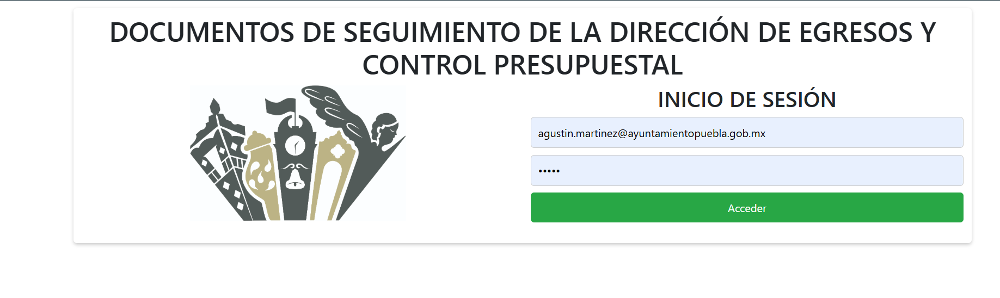
Acceso a la Vista de Panel de Tramites
Al iniciar sesión, el usuario con rol Operador accede directamente al Panel de Control Tramites, el cual
presenta una vista general del módulo de Seguimiento de Trámites.
En esta sección se despliega una tabla dinámica con el resumen de trámites asignados a cada analista,
clasificados por tipo (OC, OP, SRF, CRF, JA, IPS, Obra, OCO, OPO) y mostrando el total de trámites
pendientes por resolver. Estos trámites se encuentran en los estados “Turnado” u “Observaciones”.
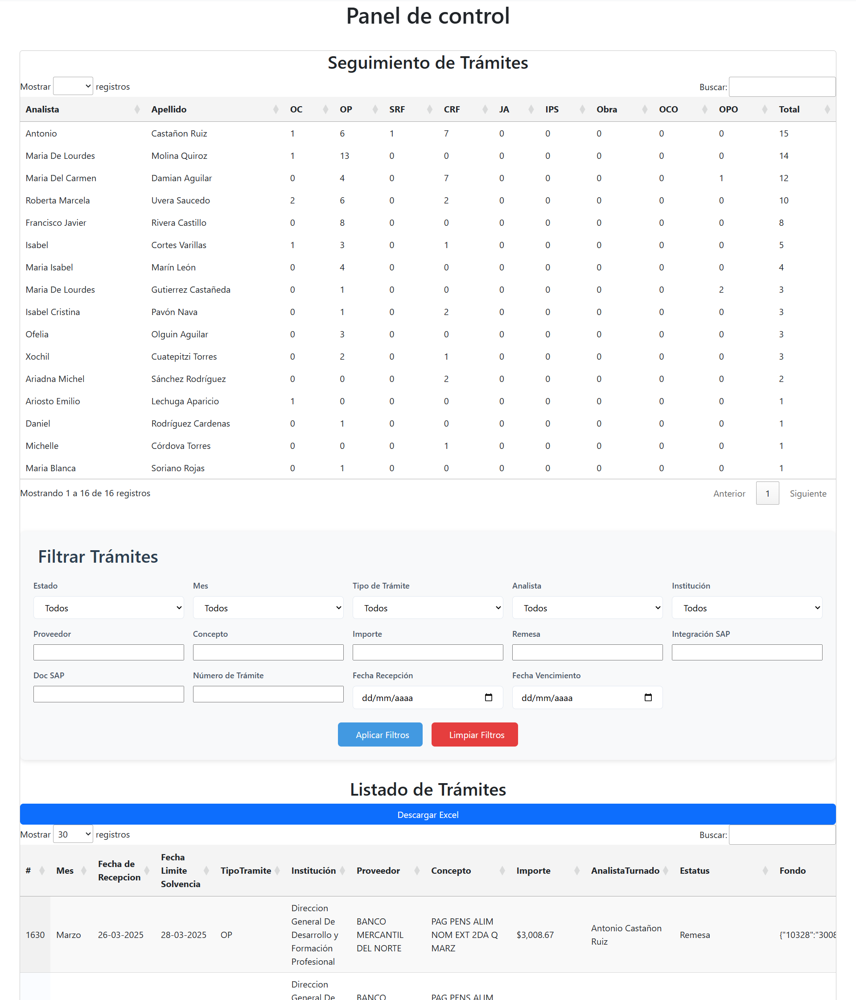
Filtros y Descarga
Debajo de la tabla de seguimiento, se encuentran disponibles opciones de filtros avanzados que permiten al
operador consultar los trámites según diferentes criterios como:
Identificador Único BD
Estado
Mes
Tipo de Trámite
Analista
Institución
Proveedor
Concepto
Remesa
Fecha de Recepción
Fecha de Vencimiento
Documento SAP
Número de Trámite
Importe
Integración SAP
Una vez definidos los filtros deseados, el operador puede presionar el botón Aplicar Filtros para visualizar
los resultados o Limpiar Filtros para restablecer la búsqueda.
Además, se cuenta con la opción de descargar la información filtrada en formato Excel mediante el botón
Descargar Excel, ubicado justo sobre la tabla de trámites.
Crear Nuevo Trámite
El Operador puede registrar un nuevo trámite accediendo al menú superior Trámite y seleccionando la opción
Crear Trámite. Esta acción despliega un formulario que permite ingresar los datos necesarios para iniciar el
trámite dentro del sistema.
Campos del Formulario
El formulario contiene los siguientes campos obligatorios y opcionales, clasificados por secciones:
Información General
Institución: Seleccionar la dependencia responsable del trámite.
Proveedor: Ingresar el nombre del proveedor involucrado.
Concepto: Describir brevemente el tipo de gasto, producto o servicio relacionado.
Importe: Indicar el monto total del trámite. Este valor se calculará automáticamente
con base en los fondos agregados.
Mes: Seleccionar el mes correspondiente al trámite.
Tipo de Trámite: Elegir uno de los siguientes tipos disponibles:
OC – Órdenes de Compromiso
OP – Órdenes de Pago
SRF – Solicitud de Recursos Financieros
CRF – Comprobación de Recursos Financieros
JA – Juntas Auxiliares
IPS – Inspectorías
OCO – Órdenes de Compromiso de Obras
OPO – Órdenes de Pago de Obras
Analista: Seleccionar el nombre del analista responsable que recibirá el trámite.
Estatus: Establecer el estado inicial del trámite. Las opciones disponibles son:
Creado: El expediente se encuentra bajo responsabilidad del operador.
Turnado: El expediente ya ha sido asignado y está en manos del analista.
Fecha Límite: Indicar la fecha límite de atención o vencimiento (máximo 5 días hábiles
si no se especifica una fecha de vencimiento).
Fondos
Fondo: Ingresar el número del fondo que respalda el trámite.
Importe: Especificar el monto correspondiente a dicho fondo.
Luego, hacer clic en el botón Agregar Fondo para que se refleje en la tabla inferior. Se pueden
agregar múltiples fondos por trámite.
Identificadores y Documentación
OPetición: Clave identificadora del trámite (ejemplo: SECATI-DEA-EA-TM-SRF-002/2025).
NoTrámite: Número único asignado internamente para seguimiento.
Dotación/Anexo: Detalle del material o documento anexo entregado (por ejemplo: “Se
entregó CD, Ruta del archivo”).
Observaciones
Comentarios: Espacio para describir las acciones por realizar, responsabilidades y
plazos establecidos.
Una vez completado el formulario, el operador debe presionar el botón Crear Trámite para guardar la
información. Si desea cancelar la acción, puede hacer clic en el botón Regresar.
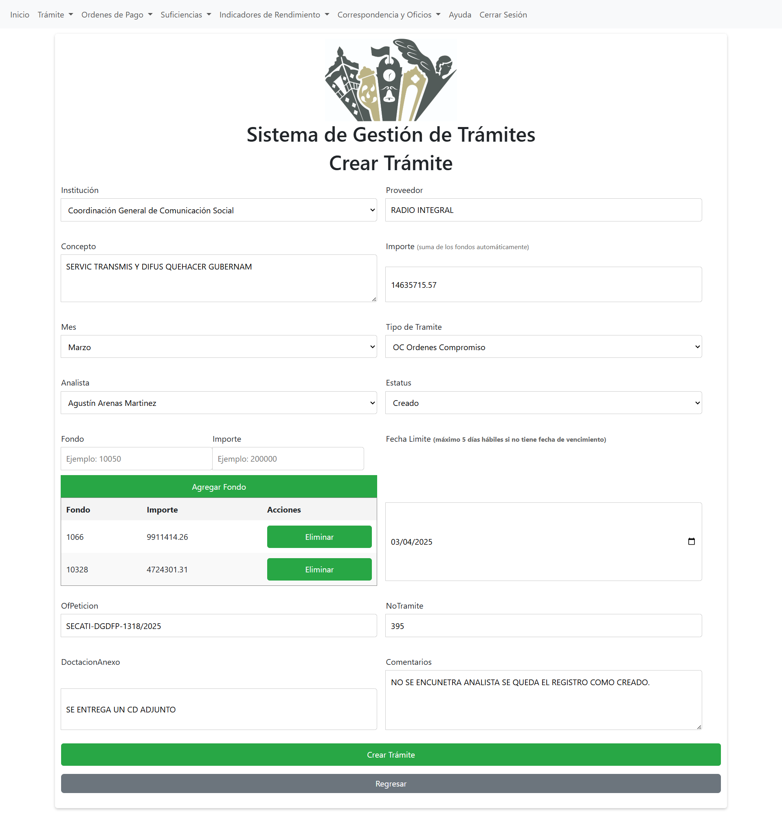
Consideraciones sobre el Estatus del Trámite
Al registrar un nuevo trámite, el campo Estatus permite identificar en qué etapa se
encuentra el expediente. Las opciones disponibles son:
Creado: El expediente se encuentra bajo responsabilidad del operador.
Este estatus se utiliza cuando no se asigna un analista al momento del registro. Ejemplo: Cuando no hay analistas disponibles o no se encuentra físicamente el analista, el
trámite se guarda como Creado y permanece en espera de ser turnado posteriormente.
Turnado: El expediente ha sido entregado a un analista para su atención.
Este estatus se selecciona únicamente si se ha entregado el expediente al analista responsable al
momento de crear el trámite.
Nota: Si se selecciona un analista, pero el estatus elegido es “Creado”, el sistema no
enviará notificación y el trámite quedará en espera. Es importante asegurar que ambos campos sean
consistentes para evitar retrasos.
Acciones Disponibles sobre Trámites en Estado “Creado”
Una vez que un trámite ha sido registrado con estatus "Creado", este se visualizará en la tabla de trámites
del operador, dentro del Panel de Tramites. Desde esta vista, el operador podrá realizar las siguientes
acciones sobre cada trámite:
Turnar: Permite asignar el trámite a un analista y actualizar su estado a “Turnado”.
Al hacer clic en el botón Turnar, se despliega un formulario donde se deben completar los siguientes
campos:
ID del Trámite: Se carga automáticamente.
Nuevo Estatus: Se establece automáticamente como “Turnado”.
Analista Turnado: Seleccionar el usuario que recibirá el trámite.
Comentarios: Campo obligatorio para describir la instrucción o contexto del turnado.
Una vez confirmado el envío, el trámite será asignado al analista y el sistema lo notificará para su
atención.
Modificar: Permite editar los campos del trámite en caso de que se haya producido un
error durante la captura inicial.
Esta acción abre el formulario con la información previamente registrada, permitiendo al operador
actualizar datos como:
Institución, Proveedor, Concepto, Fondos
Fechas, Documentos SAP, Remesa
Datos de analista, comentarios y cualquier otro campo editable
Se debe proporcionar un motivo de modificación antes de guardar los cambios.
Eliminar (Disponible solo para usuarios con rol Administrador): Permite eliminar de
forma definitiva el trámite de la base de datos.
Esta acción no está disponible para usuarios con rol operador o analista. Una vez ejecutada, el
registro no podrá ser recuperado.
Ver Comentario: Permite visualizar la bitácora de comentarios históricos del trámite.
Los comentarios se presentan en formato estructurado JSON e incluyen:
ID del trámite
Fecha del comentario
Estatus en el que se encontraba
Detalle textual del comentario
Esta opción es útil para dar seguimiento a los cambios de estado y decisiones previas tomadas durante
el flujo del trámite.
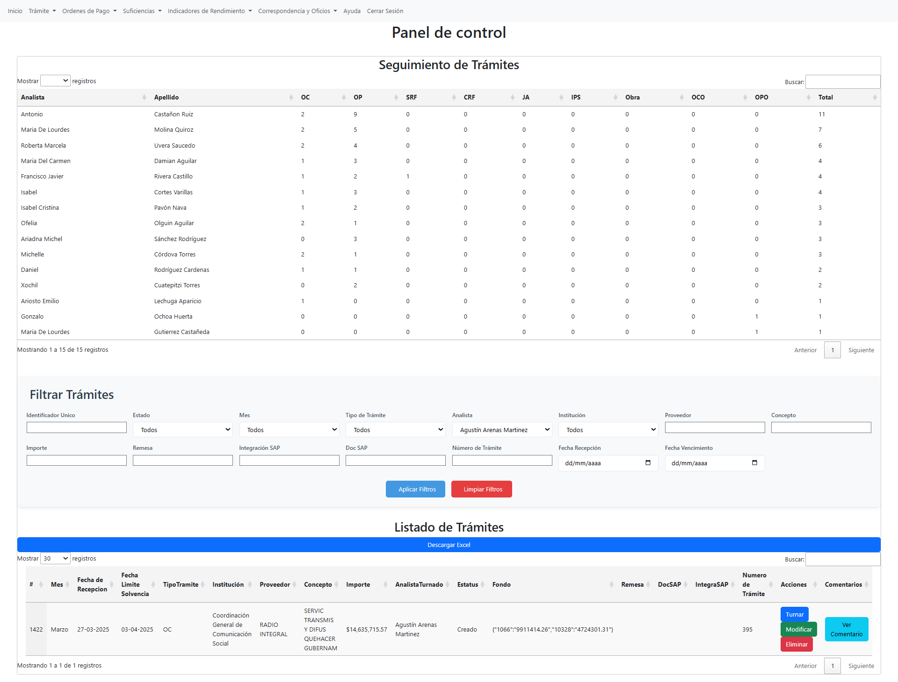
Seguimiento de Trámites por el Analista
Una vez que un trámite ha sido turnado, se muestra en el módulo de Seguimiento de Trámites Turnados del
analista asignado.
Vista Inicial
Al acceder a su panel, el analista visualiza un resumen de estado a través de un semáforo de vencimientos,
que agrupa los trámites turnados según su fecha límite:
🔵 Trámites que vencen hoy
🔴 Trámites vencidos
🟢 Trámites por vencer
Esta vista le permite priorizar su carga de trabajo de forma efectiva.
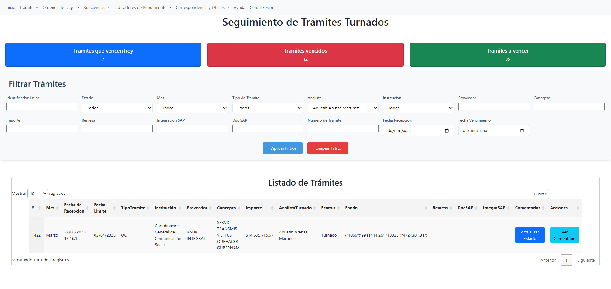
Filtros Inteligentes
El módulo incluye un conjunto de filtros avanzados que permiten consultar los trámites asignados por diversos
criterios:
Identificador Único
Estado
Mes
Tipo de Trámite
Institución
Proveedor
Concepto
Importe
Remesa
Documento SAP
Número de Trámite
Fechas de Recepción y Vencimiento
Una vez seleccionados los criterios, se debe hacer clic en Aplicar Filtros para obtener los
resultados deseados.
Acciones Disponibles
En la tabla de resultados, cada trámite cuenta con las siguientes acciones:
Actualizar Estado
Esta acción permite al analista registrar el avance del expediente y actualizar su situación actual
dentro del flujo de trabajo. Las opciones disponibles son:
Observaciones: El analista identifica errores u omisiones en el expediente,
notifica a la institución y solicita correcciones. Nota: El expediente permanece en
manos del analista.
Devuelto: El analista genera un volante de devolución y entrega el expediente
físicamente al representante de la institución.
Registrado SAP: El analista realiza el registro del trámite en SAP, incluyendo
el número de documento SAP e Integra SAP, y remite el expediente al operador para su
seguimiento.
Juntas Auxiliares: Aplica a comprobaciones de gasto de juntas auxiliares. El
analista valida el trámite y entrega el expediente al operador para continuar con el proceso.
Inspectoría: Aplica a comprobaciones de gasto de inspectorías. El analista
valida el trámite y remite el expediente al operador para su procesamiento.
Importante: En los estados Observaciones y Devuelto, el sistema habilita un botón
adicional para enviar una Tarjeta Informativa con la información clave del trámite y las
observaciones registradas. (Este botón copia el contenido relevante para seguimiento
interno) Nota: El analista debe regresar al sistema y guardar los cambios del trámite.
Ver Comentarios
Esta opción muestra el historial completo de comentarios asociados al trámite, permitiendo al
analista consultar acciones anteriores, fechas y observaciones registradas.
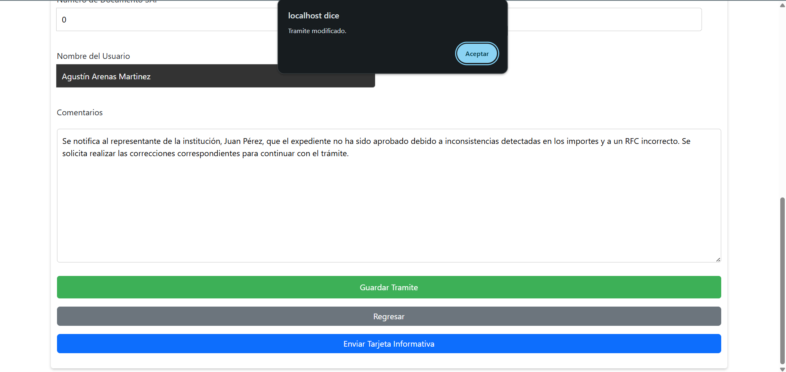
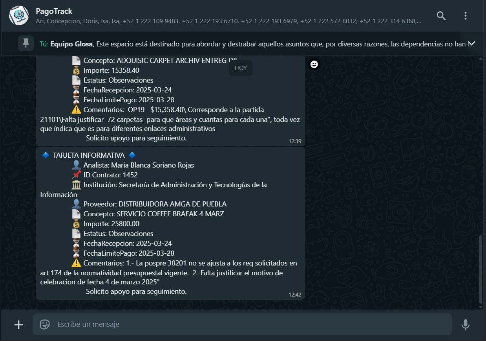
Ciclo de Vida del Trámite
El sistema PagoTrack incorpora una lógica de transición automática entre estados, la cual permite gestionar
el flujo de trabajo de forma ordenada y eficiente. A continuación, se describe el comportamiento del sistema
en función del estado del trámite:
Observaciones: Cuando un analista actualiza el estado del trámite a Observaciones, se
notifica a la institución para que realice las correcciones el mismo día. Si la institución no
resuelve las observaciones al finalizar el día, el trámite deberá ser actualizado manualmente a Devuelto
y se deberá generar un volante de entrega dirigido a la dependencia correspondiente.
Devuelto: Una vez que el estado ha sido actualizado a Devuelto, el expediente se
considera entregado físicamente a la institución. Si el trámite permanece en estado “Devuelto” por
más de dos días, el sistema lo actualizará automáticamente a Rechazado.
Rechazado: Los trámites en estado Rechazado representan expedientes que no cumplieron
con los requisitos ni fueron corregidos a tiempo. Al iniciar un nuevo mes, el sistema actualizará
automáticamente estos trámites a estado Cancelado, indicando que deberán ser reintegrados como nuevos
registros si aún se requiere su procesamiento.
Estados de Éxito:
Registrado SAP
Juntas Auxiliares
Inspectoría
Cuando el analista selecciona alguno de estos estados, se considera que el trámite fue revisado
exitosamente y el expediente ha sido entregado al operador. El sistema lo descontabiliza
automáticamente del semáforo de seguimiento del analista.
Asignación de Remesa y visibilidad para el Operador
Cuando un analista actualiza el estado del trámite a Registrado SAP, el expediente pasa automáticamente a
estar visible nuevamente en el Panel de Tramites del operador.
En esta etapa, el trámite se considera revisado y validado, por lo que se habilita una nueva acción en el
sistema:
Botón: Asignar Remesa
Esta funcionalidad permite al operador asignar un número de Remesa a los trámites validados, agrupándolos
para su gestión contable y seguimiento administrativo.
Procedimiento
Desde la tabla de trámites, el operador deberá hacer clic en el botón Crear Remesa.
El sistema mostrará un formulario con los siguientes campos:
ID del Trámite: Campo precargado de solo lectura.
Número de Remesa: Ingresar el código de remesa correspondiente (ejemplo: 270325-84-1).
Comentarios: (Opcional) Breve justificación o nota relacionada a la remesa.
Una vez completada la información, presionar el botón Asignar Remesa.
El sistema actualizará el registro y mostrará el número de remesa asignado directamente en la tabla de
trámites.
Consideraciones
Todos los trámites con estatus Remesa ya no aparecerán en la sección de trámites pendientes del
analista.
El número de remesa permite agrupar múltiples expedientes bajo una misma clave para su seguimiento
financiero.
Esta acción también estará disponible para edición en caso de que se detecte un error, a través del
botón Modificar.
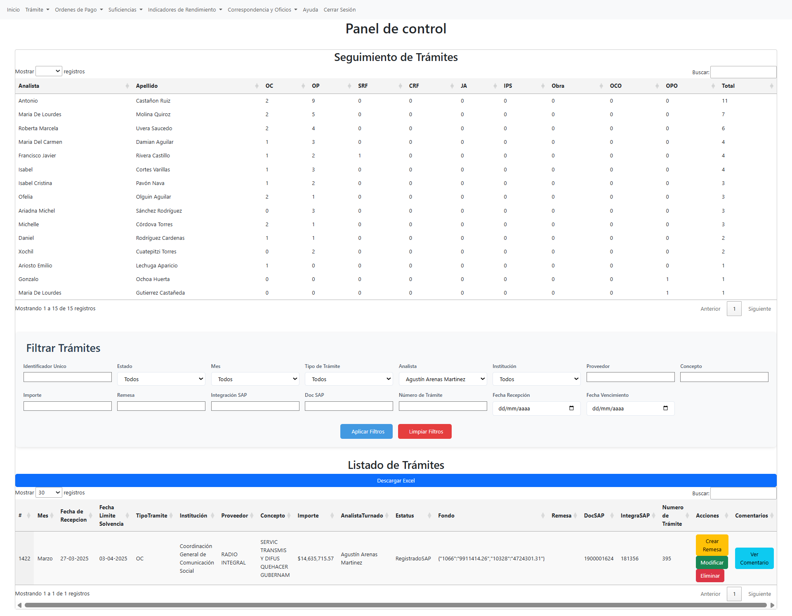
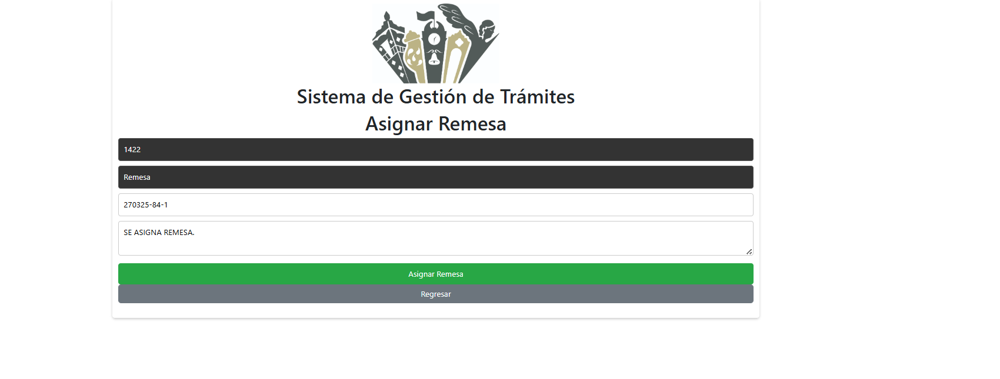
Gestión de Remesas
Una vez que un trámite ha sido asignado a una remesa, el operador puede acceder al módulo "Remesas" desde el
menú superior en la opción Trámite → Remesas.
En esta vista, se listan todas las remesas creadas, agrupando los trámites registrados bajo el mismo número
de remesa.
Estructura de la Vista
Número de Remesa
Cantidad de Trámites Asociados
Acciones Disponibles:
Configurar
Imprimir
Aprobar Remesa
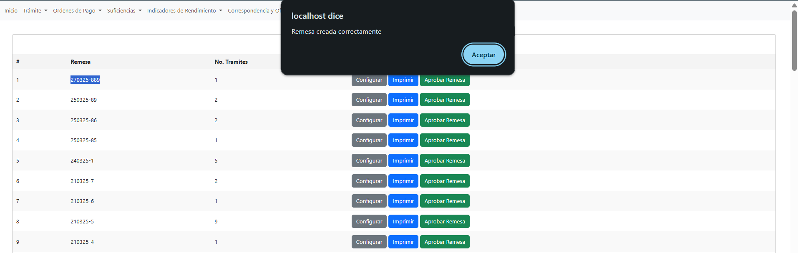
Funcionalidades de Remesa
1. Configurar
Esta acción es obligatoria y el primer paso para trabajar con una remesa.
Al hacer clic por primera vez en el botón Configurar, el sistema crea internamente el registro de remesa en
la base de datos y muestra una alerta de confirmación: "Remesa creada correctamente".
Al hacer clic nuevamente, se abrirá un formulario con los siguientes campos para su configuración:
Campo
Descripción
Identificador de la Remesa
Generado automáticamente por el sistema
Departamento Responsable
Seleccionar entre "GLOSA", "Presupuesto", u "Órdenes de Pago"
Fecha de Remesa
Fecha oficial de creación de la remesa
Número de Remesa
Clave de remesa asignada previamente (ej. 270325-889)
Fecha de Pago Límite
Fecha en la que debe liquidarse la remesa
Estatus
Estado de la remesa: Pendiente, Aprobada, Pagada, Rechazada, Cancelada
Comentarios
Observaciones relevantes. Este campo será visible al imprimir la remesa
Una vez completado el formulario, hacer clic en Actualizar Remesa para guardar los datos. La configuración de
remesa es requisito obligatorio para habilitar las funciones de Imprimir y Aprobar Remesa.
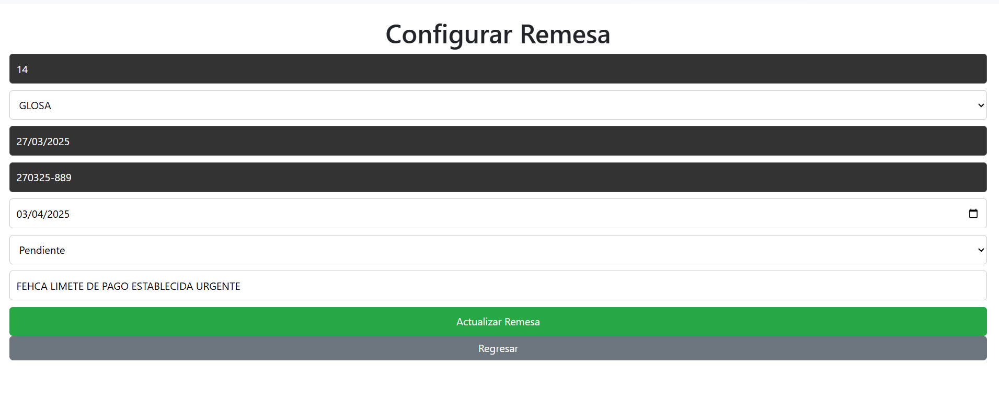
2. Imprimir
Al presionar este botón, el sistema genera un formato de impresión oficial de la remesa, consolidando todos
los trámites asociados al número de remesa. El documento incluye:
Encabezado con fecha y número de remesa
Tabla detallada por trámite (ID, SAP, Integra, Institución, Proveedor, Importe, etc.)
Observaciones desde la configuración
Espacios de firma: Revisión, Validación y Recepción
Este documento puede ser descargado e impreso para gestión física y respaldo documental.
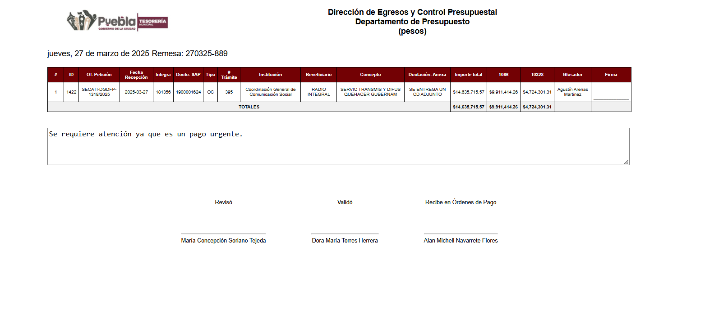
3. Aprobar Remesa
Este botón está destinado al coordinador o responsable final. Cuando el expediente físico y la validación en
SAP han sido revisados y confirmados, se procede a aprobar la remesa. Una vez aprobada: